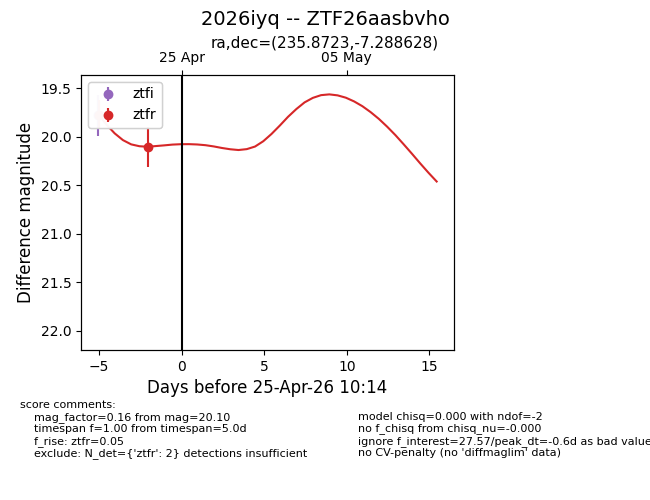
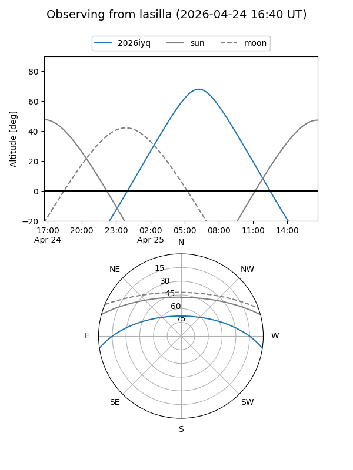
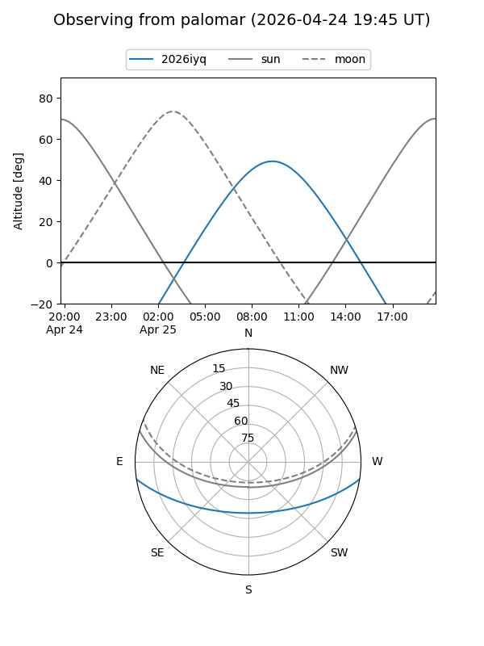
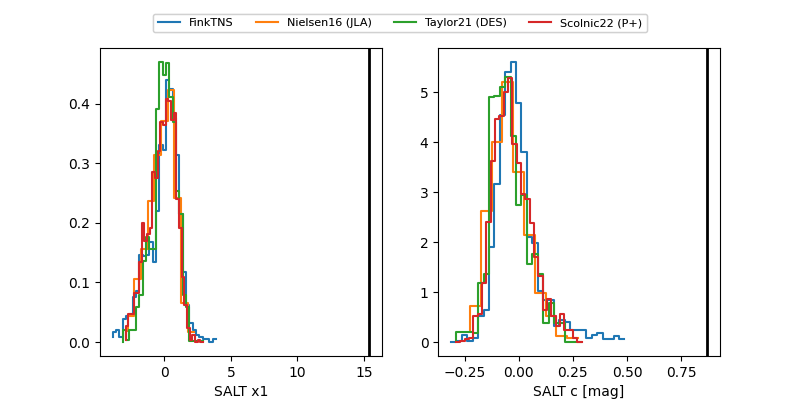

2026iyq
Target 2026iyq at 2026-04-25 10:15
Aliases and brokers:
FINK: link
Lasair: link
ALeRCE: link
TNS: link
YSE: link
alt names
ZTF26aasbvho (ztf,fink_ztf)
2026iyq (tns,yse)
Coordinates:
equatorial (ra, dec) = 235.8723,-7.28863
equatorial (HMS+DMS) = 15:43:29.34,-07:17:19.06
galactic (l, b) = (359.6818,+35.99061)
Flags:
Photometry:
last ztfr=20.10
2 ztfr detections
Lightcurve

Visibility


Additional plots
